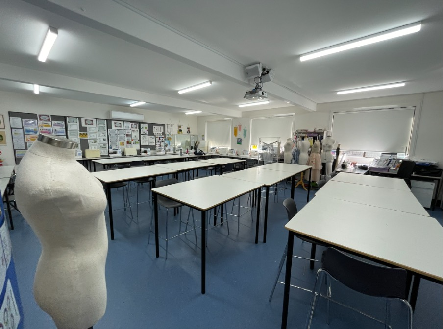

I am a third-year student at Australian Catholic University studying a double degree in Secondary Education and Design Innovation Technologies. I am majoring in textiles and minoring in food technology and have a passion for teaching. Over the course of my study, I have had the opportunity of go on 3 placements in different schools across Sydney which has developed my teaching skills and grown my enthusiasm for teaching.
My first teaching placement was at Santa Sabina College in Strathfield an all-girls school in which I enjoyed developing my skills as a teacher being able to develop hands-on learning experiences for textiles, food technology and digital technology classes ranging from years 7-10. My second placement was at Marist Eastwood an all-boys school where I developed my skills further in food technology and industrial technology where students created projects such as planter boxes and clocks. My previous placement was at Mercy College Chatswood an all-girls school in which I taught classes years 7-11 textiles, food technology and engineered systems where classes ranged from CO2 dragster cars to Aussie Damper practical food lessons.
I thrive on supporting students and helping them grow and achieve their full potential by engaging them in interactive and hands-on lessons. My teaching philosophy is based on making learning equitable and enjoyable for all students by using a range of teaching methods such as project-based learning, collaborative work and small group work all whilst incorporating technology into the classroom. I place a strong focus on creating diverse learning plans that meet the needs of all my students so they each feel supported in my classroom and can engage with the work.
My goal as a teacher is to support my student’s growth both academically and personally by creating a positive attitude towards learning and building confidence and collaboration skills. I want to create students who have positive critical thinking and problem solving skills that think outside of the box.